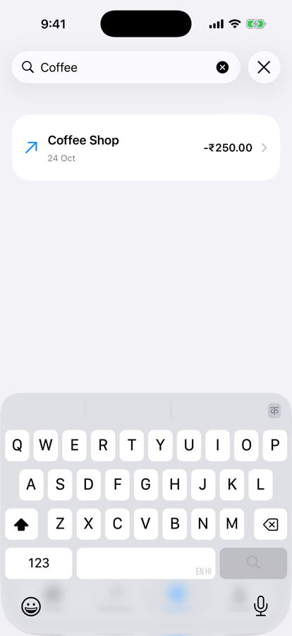

Unit 03 · Lesson 3.11
SwiftUI Performance
& Lazy Loading
NPay with 50,000 transactions: why History can stutter, and how to find out instead of guessing.
Lesson 3.11 · Outcomes
By the end, you will be able to explain
Separate state, evaluation, layout, rendering and display
Choose between VStack, LazyVStack and List
Tell data loading from view creation
Keep identity stable and reads narrow
Keep expensive work out of body and off the main actor
Measure first: observe, measure, change one thing
Lesson 3.11 · Where we are
Today: a fast History with 50,000 records
Unit 03 · Advanced SwiftUI & Navigation
Part 1
What “slow” means
Performance is more than rendering
Part 1 · Our NPay performance milestone (section 1)
Same rows, three containers, growing data
ScrollView+VStack+ForEachScrollView+LazyVStack+ForEachList
| Records | What the text expects |
|---|---|
| 1,000 | fine in any container |
| 10,000 | the eager container starts to matter |
| 50,000 | data, sorting and filtering matter too |
Conceptual workload, not a benchmark.
- Eager: processes every child
- Large collection → large up-front work
- Investigate which container suits NPay
- Don’t assume one is always fastest
Part 1 · Performance is more than rendering (section 2) · conceptual
Five places work can pile up
Simplified: SwiftUI may combine, skip or schedule this work differently.
- A view’s body was evaluated
- The view was laid out
- Pixels were redrawn
- A body can be evaluated without a full redraw
- Body counts alone don’t prove a problem
Part 2
Eager and lazy
VStack builds everything; LazyVStack builds what’s needed
Part 2 · First experiment: an eager VStack (section 3)
10,000 rows, all of them built
struct HistoryPerformanceLab: View {
let transactions = Array(1...10_000)
var body: some View {
ScrollView {
VStack(spacing: 8) {
ForEach(transactions, id: \.self) { id in
Text("Transaction #\(id)")
.frame(
maxWidth: .infinity,
alignment: .leading
)
.padding()
}
}
}
}
}row bodies evaluated on open: 10,000
process memory footprint: ~1 GB
Our counting copy of the section 19 row; indicative, not a device figure.
VStackis an eager layout container- Every child is created and measured up front
ForEachisn’t the problem- The surrounding container is
Part 2 · Replace VStack with LazyVStack (section 4)
One line: 10,000 rows becomes 15
ScrollView {
LazyVStack(spacing: 8) { // was VStack(spacing: 8)
ForEach(transactions, id: \.self) { id in
Text("Transaction #\(id)")
.frame(maxWidth: .infinity,
alignment: .leading)
.padding()
}
}
}| Same data | Rows on open | Footprint |
|---|---|---|
VStack | 10,000 | ~1 GB |
LazyVStack | 15 | ~39 MB |
iPhone 17 simulator, Debug build.
- Rows created and laid out when needed
- Built for scrolling collections
- The array still holds all 10,000 records
- Lazy layout ≠ lazy data
Part 2 · Three different kinds of laziness (section 5)
LazyVStack is about one of them
footprint before: 37 MB
after 50,000 records: 46 MB
after 500,000 records: 94 MB
- API pagination: Unit 5
- Persistent, fetched data: Unit 6
Part 3
List and scrolling
Lazy containers while you scroll
Part 3 · List versus LazyVStack (section 6)
Both lazy; different jobs
| List | LazyVStack |
|---|---|
| Built-in scrolling | Usually inside a ScrollView |
| Platform-adaptive row behaviour | More custom layout control |
| Swipe actions and selection | Interactions built explicitly |
| Manages collection presentation | A lazy stack layout |
| Standard histories | Customized feeds |
| 10,000 records | Rows on open | Footprint |
|---|---|---|
List | 9 | ~39 MB |
LazyVStack | 15 | ~39 MB |
iPhone 17 simulator, Debug build.
- Selection, swipe actions
- Accessibility behaviour (3.10)
- Large collections
- Measure; don’t assume it always wins
Part 3 · What happens while scrolling? (section 7) · conceptual
Only the visible region is built
Exact caching, row lifetime and reuse are private implementation details.
| Scrolled to the last of 10,000 | Row bodies | Footprint |
|---|---|---|
VStack | 10,000 (no new) | ~1 GB |
LazyVStack | 15 → 31 | ~41 MB |
List | 9 → 25 | ~45 MB |
- Jumping to the end built a few dozen rows
- Not the 9,990 in between
Part 4
Identity and Observation
Stable ids; narrow reads
Part 4 · View identity and performance (section 8)
A new id every time: every row is new
struct Transaction: Identifiable {
let id: UUID
let title: String
let amountPaise: Int
let date: Date
}struct Transaction: Identifiable {
var id: UUID {
UUID()
}
let title: String
}stable id: 0 rows appeared again
computed id: every visible row appeared again
(13–26 onAppear calls per run)
- Unnecessary work
- Lost row state
- Unexpected animations
- Identity = the logical transaction
- Not the current rendering attempt
Part 4 · Does every state change update every view? (section 9)
Observation tracks what each body reads
@MainActor
@Observable
final class NPayStore {
var balancePaise = 2_500_000
var transactions: [Transaction] = []
}BalanceViewreads onlybalancePaiseHistoryViewreads onlytransactions
| Change | Balance body | History body |
|---|---|---|
| Append a transaction | 0 | 1 |
| Change the balance | 1 | 0 |
| Set the balance to its own value | 0 | 0 |
Body evaluations counted in the simulator.
- Not a guarantee: parent updates, structure changes and other dependencies still evaluate views
- Investigate actual behaviour
Part 4 · Inspect view evaluations (section 10)
Self._printChanges(): a debugging aid
struct DebugTransactionRow: View {
let title: String
var body: some View {
let _ = Self._printChanges()
return Text(title)
.padding()
}
}DebugTransactionRow: @self changed.
- Why SwiftUI considers the view changed
@self: the view value itself is new
- Not a public metric; not production logging
- Evaluated ≠ slow
Part 5
Work inside body
Sorting and filtering on every update
Part 5 · Expensive computations inside body (section 11)
A sort that runs with every evaluation
var body: some View {
let sorted = transactions.sorted {
$0.date > $1.date
}
return List(sorted) { transaction in
TransactionRow(transaction: transaction)
}
}keystrokes: 4
sorts in body: 4
- Sort in a data layer, or cache the result
- Or have the repository return sorted data
- Small collection: probably fine
- Measure before optimizing
Part 5 · Understanding sorting complexity (section 12)
n log₂ n grows faster than n
Illustrative n log₂ n: relative work, not measured runtime.
- Typically O(n log n)
- 5× the records
- About 5.9× the comparisons
- Cost depends on types, comparator, hardware, memory, compiler
Part 5 · Introduce transaction filtering (section 13)
Search in NPay History
@State private var searchText = ""
private var filteredTransactions: [Transaction] {
guard !searchText.isEmpty else {
return transactions
}
return transactions.filter {
$0.title.localizedCaseInsensitiveContains(
searchText
)
}
}
List(filteredTransactions) { transaction in
TransactionRow(transaction: transaction)
}
.searchable(text: $searchText)
NPay History: “Coffee”
filters of all 50,000: 4
shown: Demo Transaction 4999,
14999, 24999, …
- Debouncing
- Background processing
- Indexed or server-side search
Part 5 · Filtering on every keystroke (section 22)
Immediate or debounced
- Every accepted change can trigger filtering
.onChange(of: searchText) {
updateResults()
}- Wait for a pause in typing
- Then do the expensive work once
| Records | Filtering every keystroke |
|---|---|
| 100 | usually inexpensive |
| 50,000 | may become noticeable |
- “4999”: 4 filters of 50,000
- A debounce would do one
- Reduce expensive operations
- Not just view descriptions
Part 6
Measuring
Observe, measure, change one thing
Part 6 · Instruments: measure real performance (section 14)
Product → Profile
- Time Profiler
- Allocations
- Leaks
- Animation Hitches
- SwiftUI-related tools
| Metric | Why it matters |
|---|---|
| CPU usage | expensive computations |
| Main-thread work | UI blocking |
| Memory allocations | unnecessary growth |
| Animation hitches | dropped or delayed frames |
| View update activity | repeated SwiftUI work |
Part 6 · Generate 50,000 transactions (section 15)
Make the dataset once, outside body
func makeDemoTransactions(
count: Int
) -> [Transaction] {
(0..<count).map { index in
Transaction(
id: UUID(),
title: "Demo Transaction \(index)",
amountPaise: -(index + 1) * 100,
date: Date().addingTimeInterval(
-Double(index) * 60
)
)
}
}- Titles “Demo Transaction 0” …
- Amounts −₹1, −₹2, …; one a minute apart
- Never inside
body - Keep it in a state owner
- 50,000 UUIDs and models cost time and memory (+9 MB here)
- Profile generation separately from scrolling
Part 6 · The runnable performance experiment (sections 16, 18–19)
One dataset, one row, three containers

HistoryPerformanceLab
Group {
switch selected {
case .eager:
ScrollView {
VStack(spacing: 0) { rows }
}
case .lazy:
ScrollView {
LazyVStack(spacing: 0) { rows }
}
case .list:
List(records, id: \.self) { id in
PerformanceRow(id: id)
}
}
}- Data once, outside body
- VStack, LazyVStack, List
- Repeat with 10,000
- Profile scrolling (Instruments)
- Compare CPU, allocations, hitches
- Record before optimizing
- Same data, row, device, build
- Several runs; Release on a device
Part 6 · Compare three containers: our results (section 16)
Counts first; memory second
| 10,000 records, PerformanceRow | Row bodies on open | After scrolling to the end | Process footprint |
|---|---|---|---|
ScrollView + VStack | 10,000 | 10,000 | ~1 GB |
ScrollView + LazyVStack | 15 | 31 | ~39–41 MB |
List | 9 | 25 | ~39–45 MB |
iPhone 17 simulator, Debug build; counting copy of the section 19 row; footprint read inside the app. Indicative, not a device benchmark.
- VStack: expensive with large collections
- LazyVStack and List: built for them
- Scrolling smoothness, CPU: Instruments on a device
- Your hierarchy may differ: measure it
Part 7
The main actor and frames
When the UI can’t keep up
Part 7 · Performance and animation (section 17)
Animate meaningful, local changes
withAnimation {
transactions = newTransactions
}- We animated NPay’s transaction updates
- Expensive to animate
- Visually overwhelming
- Animate meaningful, localized changes
- Not massive replacements, just because you can
Part 7 · Why can the UI freeze with LazyVStack? (section 20)
The button action runs on the main actor
Button("Load Transactions") {
let records = makeDemoTransactions(
count: 50_000
)
transactions = records
}idle, per 0.5 s: ~30
50,000 records: 0 (action 0.02 s)
500,000 records: 0 (action ~0.2 s)
longest frame gap: ~0.25 s, not 0.017
- A lazy container can’t fix synchronous work
- Later: Swift concurrency moves it off the main actor
Part 7 · Understanding frame budgets (section 21)
Time between refresh opportunities
1000 / 60 = 16.67 ms · 1000 / 120 = 8.33 ms: theoretical intervals at fixed refresh rates.
- Too much work in a critical update
- Frames miss presentation → visible hitches
- Not a CPU budget for your code alone
- Layout, rendering, GPU, scheduling share it
Part 8
Diagnosis and NPay
Choose the fix that matches the cause
Part 8 · Choose the correct fix (section 23)
Symptom, cause, fix
| Symptom | Cause | Fix |
|---|---|---|
History is slow to open: 50,000 rows in a VStack | Eager layout builds every row | Use a lazy container (List, LazyVStack) |
| Rows flicker, lose state, re-animate on every update | Unstable ids (UUID() per access) | Store a stable id in the model |
| Typing in search feels heavy with 50,000 records | Sort/filter re-run on every keystroke | Move or cache the work; debounce (later) |
| UI freezes after tapping Load | Synchronous work on the main actor | Move CPU-bound work off it (concurrency) |
Scenario 1 is the text’s; scenarios 2–4 are ours, drawn from this lesson’s sections.
- More animation, new UUIDs, a different container for a main-actor freeze: none touch the cause
Part 8 · NPay after Lesson 3.11 (section 25, integration authored)
Searchable History; measured choices
| Where | Change |
|---|---|
| HistoryScreen | @State searchText, filteredTransactions, .searchable (section 13) |
| HistoryScreen | Stays a List: lazy, selection, accessibility |
| Transaction | Unchanged: stored, stable id |
| Lab only | HistoryPerformanceLab, makeDemoTransactions: not in the app |
- Debounced search: with Swift concurrency
- Pagination and persistence: Units 5 and 6
- 11 of 12 lessons; next: 3.12 integration & architecture review
History search
Lesson 3.11 · Recap
What to remember
Lazy views, not lazy data
VStack built 10,000 rows; LazyVStack 15; List 9
Stable ids, narrow reads, light bodies
no UUID() per access; no big sort per keystroke
Measure, and free the main actor
0 frames while it was busy; observe → measure → change one thing
Review
Check your understanding
Check your understanding · 1 of 10
Does LazyVStack automatically paginate backend data?
It defers view creation; our 10,000 records were all in memory.
Common trap: Confusing lazy layout with lazy data.
Check your understanding · 2 of 10
Does every body evaluation mean a full pixel redraw?
Evaluation, layout and rendering are different stages.
Common trap: Treating body counts as redraw counts.
Check your understanding · 3 of 10
What is the main purpose of Instruments?
- Measure application behavior
- Generate SwiftUI views
- Replace the compiler
CPU, main thread, allocations, hitches, view updates.
Common trap: Optimizing without measuring.
Check your understanding · 4 of 10
Can unstable IDs harm collection performance?
A computed UUID made every visible row appear again on an unrelated change.
Common trap: Thinking any unique id is fine.
Check your understanding · 5 of 10
Can synchronous CPU work block UI responsiveness?
Zero display frames while the action ran on the main actor.
Common trap: Expecting a lazy list to prevent freezes.
Check your understanding · 6 of 10
Should we optimize before measuring?
Observe, measure, identify, change one thing, measure again.
Common trap: Rewriting code on a hunch.
Check your understanding · 7 of 10
10,000 records in ScrollView + VStack + ForEach. How many row bodies are evaluated when it opens?
- About a screenful
- 10,000
- None until scrolling
Eager: our run evaluated all 10,000; LazyVStack evaluated 15.
Common trap: Assuming ScrollView makes content lazy.
Check your understanding · 8 of 10
body sorts 50,000 records and the user types 4 characters into a search field the body reads. How many sorts?
- 1
- 4
- 0
One sort per body evaluation: 4 in our run.
Common trap: Thinking computed work is cached.
Check your understanding · 9 of 10
BalanceView reads only balancePaise; HistoryView reads only transactions of the same @Observable store. Append a transaction. Which bodies run?
- Both
- Only HistoryView
- Only BalanceView
Observation tracked the reads: balance 0, history 1.
Common trap: Expecting object-wide invalidation.
Check your understanding · 10 of 10
From Lesson 3.10: does VoiceOver speak an accessibilityIdentifier?
It's for UI automation; the localized label is spoken.
Common trap: Using identifiers as labels.
Lesson 3.11 · Where this goes next
Where this goes next
| Lesson | Topic | Builds on today |
|---|---|---|
| 3.12 | Unit 3 integration & architecture review | the complete NPay, including searchable History |
| Unit 4 | MVVM & application architecture | sorting and filtering move out of views |
| Units 5–6 | Networking; persistence | pagination and fetched data: lazy data |
| Concurrency | Swift concurrency | debounced search; work off the main actor |
Lesson 3.11 · Lab
Measure, then change one thing
Build the lab; count; profile.
- Build HistoryPerformanceLab (section 19).
- Count row bodies on open for each container.
- Scroll to the end; count again.
- Give Transaction a computed id; watch onAppear.
- Sort in body over 50,000; type in a search field.
- Profile one change in Instruments, on a device.
- Your counts table for the three containers
- One before/after Instruments trace
- A one-line diagnosis: symptom, cause, fix
Lesson 3.11 complete
SwiftUI Performance
& Lazy Loading
Next: Lesson 3.12 — Complete Unit 3 NPay Integration & Architecture Review